I am a recent graduate from UCI with a B.S. in Computer Science with a specialization in Visual Computing. My experience focuses on interactive projects using Unity, XR technologies and computer graphics. I am passionate about building clean and maintainable systems along with technical implementation with visual polish. I am currently seeking entry-level roles in AR/VR or Unity development where I can contribute to immersive and engaging experiences.
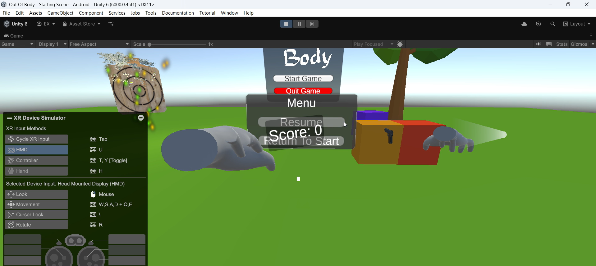
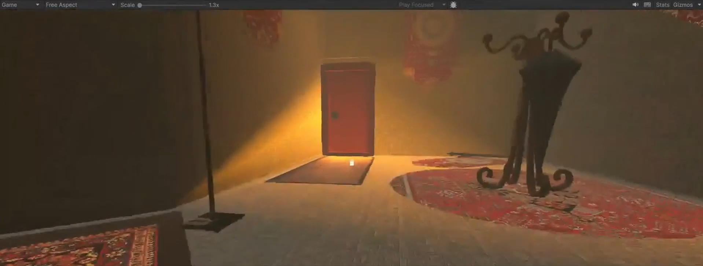
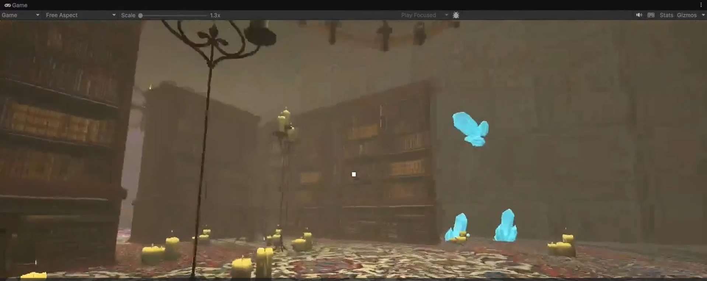
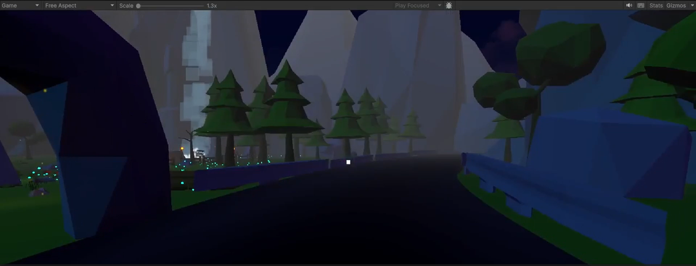
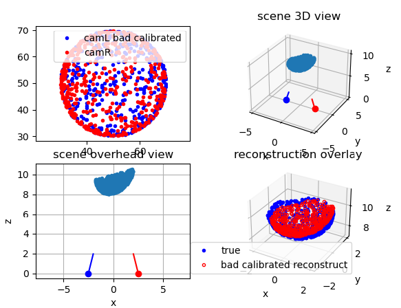
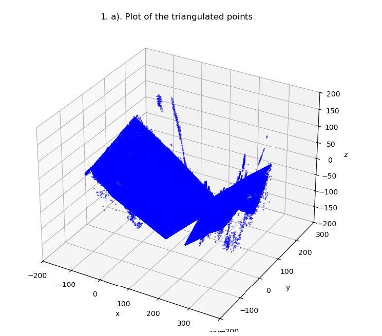
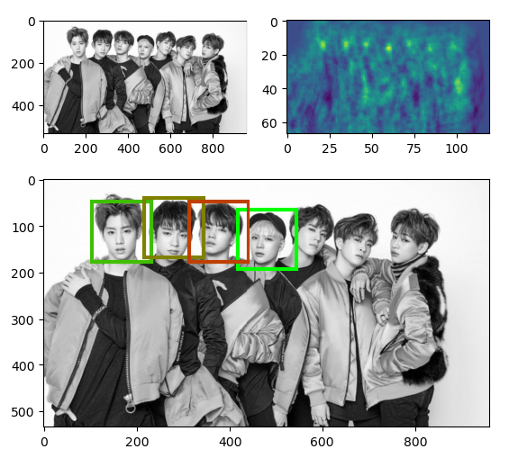
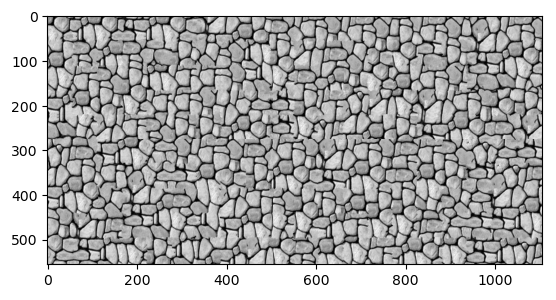
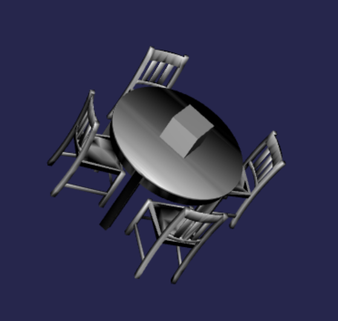
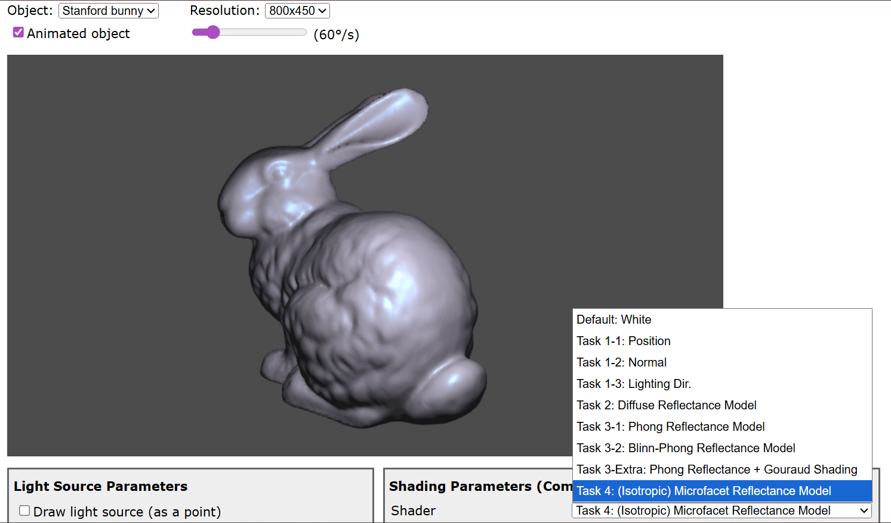
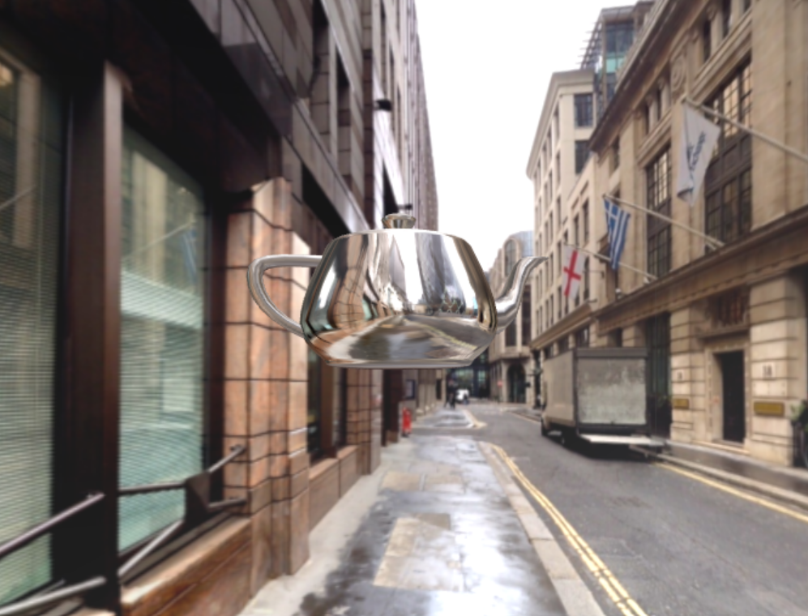
Email: andregaca02@gmail.com